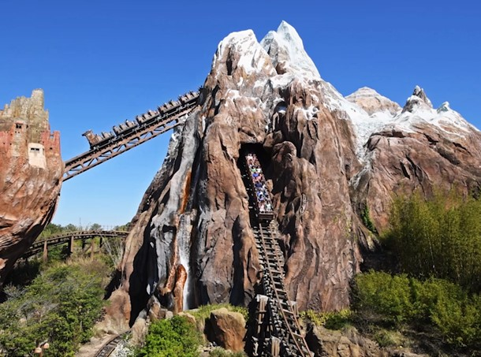
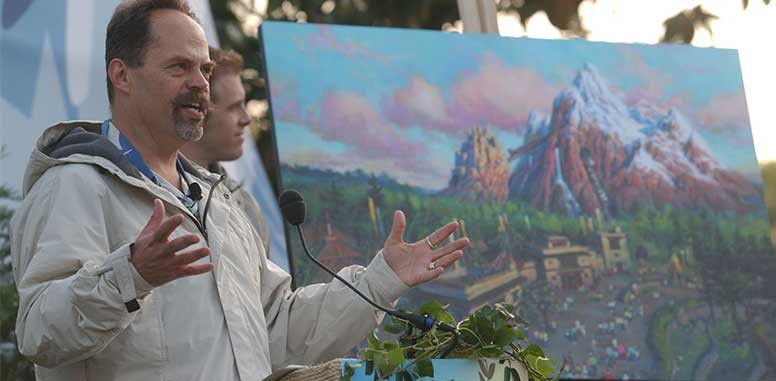

 Expedition Everest is a high-speed, rollercoaster type attraction that travels through “the forbidden mountain,” and takes guests on a wild adventure to escape the mythical Yeti. As the ride continues, passengers get closer and closer to the Yeti, first seeing paintings of what he is perceived to look like in Tibetan folklore, followed by a broken track, and finally a silhouette of the yeti ripping track, blocking the guests escape. Then, as the train speeds down the side of the mountain, and into the Yeti’s cave, guests look up and are faced with a massive, full-sized Yeti statue. Well, a little-known fact about this “statue” is that it is broken and is not a statue at all. Programmed to be the largest, most advanced audio animatronic in the world, Yeti is meant to lunge forward and swipe his arm downward, attempting to grab the guests who dared trespass in his mountain.
"the multimillion monkey animatronic" Yeti, commonly known as “Disco Yeti” because of a “fix” imagineers made to simulate movement of the stationary creature, has been 100% motionless since December of 2006, only eight months after opening (with the exception of a few days where Yeti was rumored to be moving in early 2008). Claiming the title of the largest and most advanced animatronic of its time, the Yeti was a technological marvel. Yeti is 25 feet tall, weighs over 4 tons, and has a total of 19 movement functions. That is, 19 different joints in his body that are programmed to move, and the entire animatronic could move 1.5 feet vertically and 5 feet horizontally, making him extremely lifelike. He moved with the force of a jet engine, causing a lot of stress on his base, which is suspended 46 feet in the air on a 16-foot-wide pole.
 A glitch in the scheduling software for the building of the attraction resulted in preventing curing of the concrete foundation around the post, and the immense movement functions of the animatronic, which quickly resulted in the cracking of the concrete 46 feet below Yeti’s perch. If movement continued, the cracking would become dangerous and the attraction would need to be closed, possibly forever. Joe Rohde, the man who worked to create the yeti, states that a fix to the foundation isn’t an easy task. Regarding the possible fix of Yeti, he says, “it’s not an issue of maintenance access, they were part of the design team and set the standard. In fact, it was seen as a model collaborative process. It’s an unexpected and unforeseen set of issues, very complex, with no easy or timely solutions as of yet.”
Since Yeti is unable to move how he is intended, the imagineers had to come up with a temporary fix to simulate movement while the animatronic is stationary. They ended up coming up with a “B-Mode,” a different programming system, where the animatronic remains still (doctor’s orders), but strobe lights flashed as trains passed, creating an illusion that he was moving toward guests, when in reality, the guests were the ones moving. “B-mode” also consists of fans being placed in certain locations around the yeti that blow his brown fur in ways that make his seem like he moves. If fixed, Yeti can easily be switched back to the “A-mode” program, with a full range of motion.
As seen in this video, the A-Mode program results in full movement of the yeti animatronic, his arm swiping forward as the train passes and his head moving side to side as he lunges forward toward his prey.
As seen in this video, the B-Mode program results in a 100% stationary yeti animatronic, with fans blowing his fur and strobe lights flashing, to simulate motion of the animatronic.
"I will fix the yeti someday, I swear" -Joe Rohde At D23 in 2013, an event where new attraction ideas are unveiled, as well as other Disney related content, Joe Rohde was asked if he would ever fix Disco Yeti. He responded with a definitive yes, promising fans that he “will fix Disco Yeti!” Unfortunately, though, Joe Rohde retired on January 4, 2021, without fixing Disco Yeti, crushing the hopes of individuals who remembered his promise. Since the fix will result in destruction of a large portion of the mountain and track around Yeti, since he sits in the middle of the attraction, the fix of the problem would likely take longer than the usual refurbishment time, putting one of the few Animal Kingdom rides out of commission for an unforeseen amount of time. Since a new, popular, area of Animal Kingdom opened in May of 2017, there are hopes that Everest will get the break it needs to make Disco Yeti work again after the 50th anniversary of Walt Disney World in October of 2021, but as of now, Disco Yeti, with his strobe lights and fans blowing his fur, will have to do.